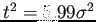
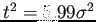
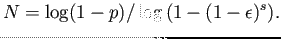

Siguiente: Determinación adaptativa de la Subir: Estimación de la homografÃa Anterior: Transformación lineal directa. Índice General
Para explicar y entender el algoritmo RANSAC, primero se presenta un problema que puede ser fácilmente visualizado el cual consiste en estimar una lÃnea recta a partir de un conjunto de puntos 2D. Este problema, también puede pensarse sobre como realizar la estimación de una transformación afÃn 1D del tipo entre puntos correspondientes que están sobre dos lÃneas.
El problema, se encuentra ilustrado en la Fig. 2.18(a) (los puntos negros son válidos y los blancos son espurios) donde se puede ver que el ajuste por mÃnimos cuadrados de los puntos (regresión ortogonal), es afectado de forma severa por los valores espurios. AsÃ, dado un conjunto de puntos 2D, se debe buscar la lÃnea que minimiza la suma de los cuadrados de las distancias perpendiculares, de tal forma que ninguno de los puntos válidos se desvÃe de la lÃnea por más de  unidades. AquÃ, se presentan dos inconvenientes: la lÃnea se debe ajustar a los datos y se deben clasificar los puntos en válidos o espurios.
unidades. AquÃ, se presentan dos inconvenientes: la lÃnea se debe ajustar a los datos y se deben clasificar los puntos en válidos o espurios.
Existen muchos tipos de algoritmos robustos y la selección de uno u otro depende de la proporción de los valores espurios (). Aquà se describe el estimador robusto RANSAC que es capaz de hacer frente a una gran proporción de valores atÃpicos.
Se empieza mediante la selección aleatoria de dos puntos; estos puntos definen una lÃnea. El soporte para esta lÃnea, es medido por la cantidad de puntos que se encuentran bajo un umbral de distancia. Luego, la selección aleatoria es repetida varias veces y la lÃnea con mayor soporte es considerada como el mejor ajuste. Los puntos que están por debajo del umbral de distancia son considerados válidos y constituyen el conjunto consensuado. Como se observa en la Fig. 2.18(b), si un punto no es válido, la lÃnea posee menos soporte lo cual favorece a un mejor ajuste. Por ejemplo, el soporte para la lÃnea en la Fig. 2.18(b) es 10, mientras que para la lÃnea en el que los puntos de ejemplo son vecinos, es 4. Consecuentemente y a pesar que ambas lÃneas contienen valores válidos, se selecciona la lÃnea por tener mayor soporte.
|
|
Generalizando lo anteriormente descripto, podemos decir que deseamos ajustar un modelo (en el ejemplo, una lÃnea) a los datos y la muestra aleatoria consiste en un subconjunto mÃnimo de datos (2 puntos en el ejemplo) suficientes para determinar el modelo. En el caso en el que el modelo es una homografÃa plana y los datos son un conjunto de correspondencias 2D, el subconjunto mÃnimo está compuesto por cuatro correspondencias.
El algoritmo RANSAC tiene como objetivo el ajuste robusto de un modelo para un conjunto de datos que contiene valores espurios. RANSAC requiere de una cantidad mÃnima de puntos para instanciar los parámetros libres del modelo y sigue los siguientes pasos:
donde  , y son:
, y son:
 puntos es
.
puntos es
.
Para  muestras, con una proporción de valores espurios del
, son necesarias 72 muestras para asegurarse con una probabilidad de , que al menos una de las muestras no contiene valores espurios. Como se observa en la ecuación (2.27), la cantidad de muestras está relacionada con la proporción de valores espurios, de forma que la cantidad de muestras requeridas debe ser menor que la cantidad de valores espurios. Consecuentemente, el costo computacional de las muestras es aceptable aún cuando la cantidad de valores espurios resulta elevado. Por otro lado, la cantidad de muestras se incrementa con la cantidad mÃnima del subconjunto (para un  y
y  dado). De aquÃ, se puede decir que usar más del mÃnimo que se requiere (4 o más puntos en el caso de la homografÃa), contribuirá a una mejor estimación y el soporte determinado reflejará con mayor precisión al verdadero soporte. Pero se debe tener en cuenta que esta ventaja, incrementa el costo computacional debido al incremento del número de muestras.
dado). De aquÃ, se puede decir que usar más del mÃnimo que se requiere (4 o más puntos en el caso de la homografÃa), contribuirá a una mejor estimación y el soporte determinado reflejará con mayor precisión al verdadero soporte. Pero se debe tener en cuenta que esta ventaja, incrementa el costo computacional debido al incremento del número de muestras.